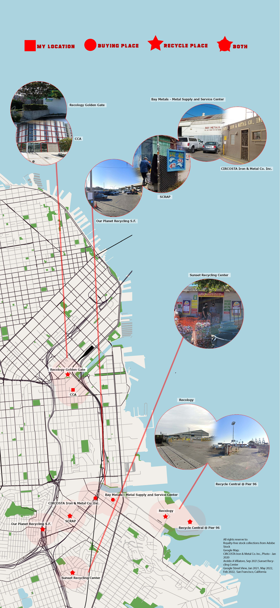
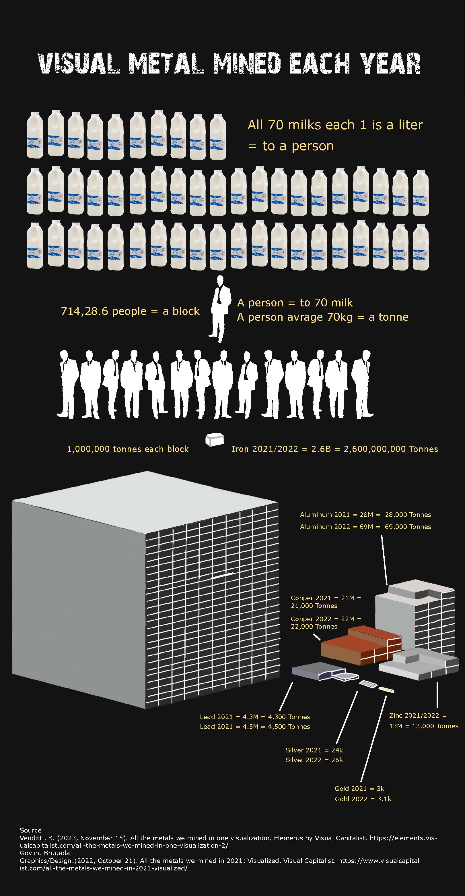
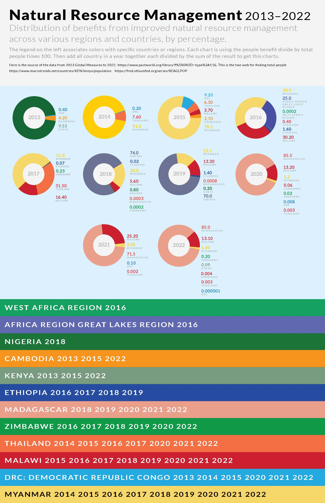

Have you thrown away any metals? Did you throw to the right place? One small piece you throw might not be much. However, if every person thinks like what you think, this world will be in trouble. Now the earth is in a lot of trouble, scroll down to see more.
Map For Nearby Location
What Are The Effects Of Metal Trash

Metal mined in a year
Country Help By Recycling
Interview With Curtis Arima

Resources Mentioned in the Interview
Issues with gold mining and how we can protect land
How gold is recycled in larger scale industry
More ethical mining
Fair mined gold
Ethical Metalsmiths - Better Without Mercury
See this article for the complications of recycled gold.
This is one example of recycling
You can find more information in this link RJM
Call or Email Eddie: She can be contacted by phone, 1-800-759-9997 Ext. 124 or send an e-mail to eddie@hooverandstrong.com.Creating an Account with Hoover and Strong (Students)
Request a New Account Form and let her know that you are a student at California College of the Arts and a Jewelry/Metal Arts major.
She will ask for you to fill out the form and send a copy of your student ID and other relevant student information. She will also require valid credit card information.
Benefits of Having an Account through Hoover and Strong
Order diamond melee (small accent diamonds) and large certified diamonds.
Order Gold, Platinum, and Palladium alloys.
Order findings (chain, ear wires, ear backs, clasps) at wholesale prices.
Ability to purchase fair trade gold and silver.